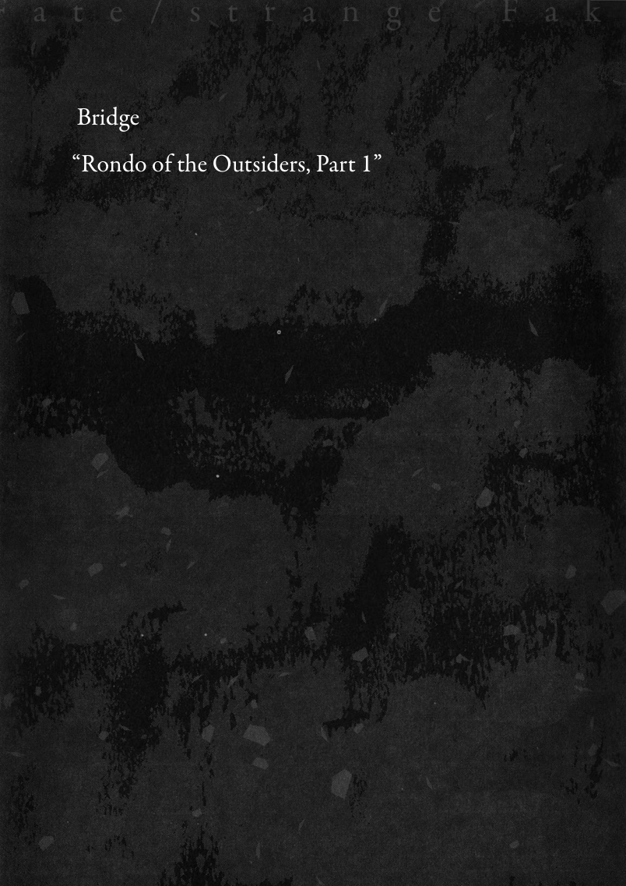

Rondo of the Outsiders
"E, na nossa próxima notícia, a sequência de mortes súbitas de ontem entre senadores e líderes industriais, causadas por acidentes e doenças, está provocando caos nas cotações da Bolsa de Nova York..."
O que aconteceu em Snowfield deveria ser chamado de "provação" ou não?
Quanto mais precisamente alguém tivesse observado os acontecimentos, mais tenderia ao "não".
Isso porque aquela série de incidentes, sem precedentes na história da cidade, e talvez até na de todos os Estados Unidos, a Guerra do Santo Graal, fora deliberadamente arquitetada.
A própria cidade de Snowfield era um campo de testes criado em solo americano para o ritual; abandonar o local e começar tudo de novo sempre fizera parte do plano desde o princípio.
Mas esse era apenas o ponto de vista dos mentores.
Para as pessoas comuns, sem conhecimento de assuntos místicos, tudo aquilo era irrelevante.
Para os moradores comuns da cidade, sem saber de nada dos motivos por trás de tudo aquilo, tratava-se de uma calamidade que descera sobre eles sem aviso.
A Guerra do Santo Graal.
Um ritual exclusivo, conhecido apenas por poucos, mesmo entre os magos.
Com Espíritos Heroicos, cujas existências estavam gravadas no "trono" do mundo, como seus familiares, magos lutavam uns contra os outros com cada fibra do próprio ser por um dispositivo onipotente que realizava desejos, um verdadeiro ponto de apoio no caminho até a Raiz.
Dizia-se que aquilo começara com outras intenções, mas a terceira Guerra do Santo Graal, realizada mais de meio século antes, vira incontáveis facções conspirarem sob a superfície. Então, na quarta Guerra do Santo Graal, ocorrida mais de uma década antes, a perda de um dos Lords da Torre do Relógio chamou a atenção de um grupo muito pequeno de magos que conseguiu escapar dos esforços para suprimir a informação.
É claro que, no grande esquema das coisas, ela era considerada "um ritual duvidoso realizado no Extremo Oriente". O que estava sendo conduzido na América, porém, começava a se mostrar estranho e distorcido demais até mesmo para uma Guerra do Santo Graal.
Para começar, havia o fato de que o número de Espíritos Heroicos invocados era grande demais.
Normalmente, uma Guerra do Santo Graal é travada por sete Servos e, embora esta parecesse se enquadrar nesse número a princípio... a partir do momento em que um Espírito Heroico aparentemente da Classe Saber surgiu diante das câmeras de uma emissora local e declarou a intenção de compensar a destruição de um teatro, teve início uma grande "divergência" em relação às Guerras do Graal originais.
Um ritual de magia deveria, falando propriamente, ser conduzido em segredo.
Para qualquer pessoa que lidasse com magia, ou com Mistério em geral, esse princípio era absoluto. E, no entanto, essa Guerra do Santo Graal falsa mal havia começado quando esse princípio foi rompido.
Quase como se dissesse que essa fora a intenção dos mentores o tempo todo.
Houve o combate singular entre Archer e Lancer no deserto.
O choque entre seus Fantasmas Nobres transformou parte do deserto em vidro e deixou em seu rastro uma cratera imensa. Oficialmente, foi declarado como uma explosão em um gasoduto.
Depois veio o ataque de Assassin à delegacia, aparentemente visando Saber, que estava sendo mantido ali.
Um hematófago que parecia ser o Mestre de Assassin invadiu a delegacia em meio ao caos, e Hanza Cervantes, a quem a Igreja Santa enviara para supervisionar a Guerra do Graal, acabou arrastado para a briga. Oficialmente, aquilo foi declarado um ataque terrorista à delegacia.
Em seguida, houve um ataque contra Archer e sua Mestre, que haviam se instalado no hotel Crystal Palace, quebrando todas as janelas das redondezas, e o incidente foi explicado como obra de um tornado imprevisto.
Então dois Servos poderosos, além de mais alguma coisa, causaram destruição em larga escala concentrada em torno de uma fábrica de processamento de carne num canto do distrito industrial, um ateliê de mago apoiado pela Família Scladio.
A devastação ainda era mantida longe dos olhos do público por uma ilusão lançada sobre uma ampla área, muito provavelmente por um Servo da Classe Caster.
Em apenas poucos dias, distorções severas já se formavam nesse ritual em andamento.
Um ritual místico na forma de uma batalha até a morte entre magos e seus familiares, e não familiares quaisquer, mas Espíritos Heroicos, personificações do próprio Mistério.
Por mais cuidadosamente que o terreno para esse ritual tivesse sido preparado, diante de uma sucessão de irregularidades em escala capaz de ameaçar a aniquilação da cidade, o encobrimento se aproximava de seu limite.
Mas, longe de caminhar para uma conclusão, a situação começava a dar sinais de uma expansão irreversível.
Ignorando por completo todas as condições atmosféricas anteriores, um furacão colossal se formara na costa oeste.
Numa área centrada em Washington D.C., figuras-chave do mundo dos negócios, da política e da informação estavam morrendo uma após a outra.
Aqueles que sabiam o que estava acontecendo nos bastidores entenderam que esses desastres não eram naturais.
Perceberam que uma grande maré se erguera na cidade de Snowfield e que o mundo estava sendo inexoravelmente arrastado para as profundezas de sua sombra.
Se alguém considerasse aquilo uma provação concedida por algum poder superior... então seria como ser arremessado a um labirinto sem fim, no qual era impossível enxergar o que havia sequer a um palmo adiante, quanto mais a linha de chegada.
Porque eles ainda não tinham se dado conta de que estavam, para começo de conversa, dentro de um labirinto.
Um chat privado numa certa rede social: Flue: "Bom, é mais ou menos isso... Deixa eu ir direto às minhas conclusões.
"Snowfield é perigosa.
"Sinceramente, quero cair fora daqui o quanto antes.
"Quero dizer, isso aqui não tem nada a ver com o que me contaram. "Claro, ninguém metido com magia diria a verdade a menos que fosse obrigado, mas, mesmo levando isso em conta, ainda assim isso aqui é absurdo.
"No mais, o núcleo do ritual provavelmente é baseado naquele de Fuyuki, mas a escala e a fundação dele saíram completamente dos trilhos.
"Primeiro, os Ghostliners.
"Vocês veteranos chamam isso de Servos. Você disse que sete deles lutaram quando foi em Fuyuki, certo?
"Bom, tentei verificar com a minha astrologia, e isso está em outro patamar. Há quase o dobro de coisas com as quais eu não gostaria de mexer, mais do que o dobro, a julgar por algumas perturbações nas estrelas que eu não consigo dizer se são Servos ou o quê.
Eu estava observando a frente do hospital ontem à noite. Primeiro havia um cachorro de três cabeças, depois duzentos seres que pareciam fantasmais surgiram do nada e foram para cima de um Espírito Heroico para quem eu teria medo até de olhar fixamente. Depois disso, a Energia Mágica ficou perturbada demais para eu observar qualquer coisa direito.
"É bom você não me dizer que aquilo era Cérbero e um bando de demônios. Seja como for, coisas que não pertencem a este lado do mundo estão desfilando pela rua principal de uma cidade americana. Se isto for um sonho, eu quero acordar. Seria preciso um mago bem infantil para me mandar um sonho desses.
"Só de explicar o que aconteceu depois já me dá dor de cabeça.
"Anexei uma pseudo-gravação de vídeo criptografada. Use magia para descompactá-la daí.
"Mas, se você achar que é uma farsa que eu inventei, isso é tudo que eu tenho.
"Não vou ficar bravo se desconfiar.
"Se eu estivesse no seu lugar, já estaria exigindo meu dinheiro de volta e mandando uma ou duas maldições a esta altura.
"Claro, você não é como eu, então talvez enxergue isso de outro jeito, senhor Flagelo da Sociedade dos Magos."
El-Melloi II: "Esse apelido foi desnecessário."
El-Melloi II: "De todo modo, obrigado pelo relatório. Pelo que você descreve, a situação está piorando mais do que eu imaginava."
Flue: "Pode apostar. Eu achava que aquela cratera no deserto era o pior a que isso podia chegar, mas já ultrapassou aquilo e afundou a cidade inteira num novo nível de desastre duas vezes por dia."
Flue: "Enfim, que história é essa de haver Espíritos Heroicos demais?"
Flue: "A terra daqui é muito boa em termos de linhas ley, mas, pelo que ouvi, ainda assim não se compara à de Fuyuki. Não faz sentido que tenham sido invocados mais Espíritos Heroicos que o normal apesar disso."
El-Melloi II: "Provavelmente estão dando partida ao mecanismo."
Flue: "É mesmo?"
El-Melloi II: "Os primeiros vários Espíritos Heroicos invocados foram usados como catalisador para perturbar intencionalmente as linhas ley e puxar temporariamente Energia Mágica de outras partes das Américas.
É uma medida drástica, como ferir o corpo para estimular uma resposta imunológica."
Flue: "Então, para invocar sete Ghostliners, eles invocaram e sacrificaram outros seis? Usaram esses Ghostliners insanos como catalisador do mesmo jeito que usariam sangue de galinha? Isso não é absurdo demais até para acreditar?"
El-Melloi II: "Para empurrar sete pêndulos para a frente, enfiaram... provavelmente cinco ou seis pêndulos por trás deles. Em condições normais, isso moveria apenas um número equivalente de pêndulos, como num berço de Newton, mas os supervisores que moldaram esta terra só precisam acrescentar força suficiente para fazer avançar o sétimo pêndulo. Agora que o primeiro conjunto de Espíritos Heroicos cumpriu seu papel, eles provavelmente serão absorvidos pela terra com o tempo, para preservar o equilíbrio."
Flue: "É um pensamento nada agradável. Eu só acreditava em metade do que você tinha me dito, mas aposto que aquele cara de armadura dourada reluzente realmente é o Rei dos Heróis acádio. No instante em que olhei a estrela dele por meio de um feitiço de visão à distância, minha cabeça girou e achei que meu cérebro ia virar mingau. Eles precisam estar fora de si para usar alguém daquele nível como lenha descartável, e nem sequer como material para o Graal."
El-Melloi II: "Exatamente. Isso está longe de ser algo que se chamaria de sensato, esteja você falando de magos ou de pessoas que nada têm a ver com Mistério. Métodos assim revelam um grupo que despreza o próprio Mistério. É esse tipo de gente que você deveria estar chamando de 'flagelo'."
Flue: "Você é mesmo a pessoa certa para dizer isso, quando está analisando Mistério por mensagem instantânea, ainda que seja privada?"
El-Melloi II: "No momento, menos magos dedicam seus esforços ao hacking de spiritrons do que à comunicação via magia. Todo método tem seus riscos, mas, dadas as limitações das minhas habilidades, esta provavelmente é a opção mais segura. Mesmo que seja interceptado e lido, qualquer pessoa comum vai supor que é algum tipo de brincadeira, e não há necessidade de escondê-lo de quem já está do nosso lado. Na verdade, quanto mais sério um mago de verdade for em esconder Mistério, mais ele trabalhará para apagar esses relatos ridículos por nós."
Flue: "Será que algum mago realmente ligaria para conversa desse tipo?"
El-Melloi II: "Bem, isso vai mudar em alguns anos. Os aparelhos de mão chamados 'smartphones', que começaram a aparecer no mercado recentemente, provavelmente se tornarão comuns o bastante para exercer influência até mesmo sobre a sociedade dos magos. À medida que o risco de Mistério ser registrado aumenta, os métodos de sigilo terão de mudar. Pode acabar sendo mais fácil plantar histórias falsas e rotular tudo como fake news. É mais um motivo pelo qual eu quero evitar que um ritual desnecessariamente grande como este abra brechas."
Flue: "Você fala tanto quanto sempre. Ou melhor, digita, neste caso. Não consigo acreditar que você consegue despejar uma parede de texto dessas em menos de um minuto. Não está metendo algum tipo de magia que eu não consigo captar no meio dessas letras, está?"
El-Melloi II: "Você me dá crédito demais. Os jogos que eu jogo por diversão às vezes exigem trocar informações condensadas com rapidez."
El-Melloi II: "Além disso, eu jamais conseguiria incorporar uma fórmula oculta de nível tão alto que você não notasse. Ainda assim, mesmo online e por escrito, seu jeito de falar não muda."
Flue: "Não estou acostumado. E usar seu nome verdadeiro como apelido também é um problema de referência. Ia ser péssimo escorregar e acabar se envenenando com as próprias maldições."
Flue: "Bom, de qualquer jeito, vou sondar este lugar mais um pouco e depois dar o fora quando a coisa ficar feia. Todo mundo que tenta sair é atingido por alguma maldição estranha e volta sob controle mental, mas vou fazer uma leitura para encontrar o ponto em que a maldição está mais fraca."
El-Melloi II: "Desculpe. Sou verdadeiramente grato por você já estar na cidade."
El-Melloi II: "Consegui entrar em contato com um dos mentores.
O chefe de polícia, com quem formei uma aliança temporária, só conseguiu me fornecer informações parciais. Pelo que ele me disse, é provável que ele próprio também não tenha sido informado de tudo o que está acontecendo. É isso que torna tão valiosas as suas informações objetivas."
Flue: "Ah, eu só vim porque achei que talvez houvesse bons trabalhos por aqui. Um mercenário usuário de magia precisa sacar rápido se quiser continuar se alimentando. Acabar colocando você em dívida comigo foi a escolha mais lucrativa. Você quebra um galho e tanto."
Flue: "...Só por perguntar, não vai aparecer mais nenhum Lord por aqui, vai?"
El-Melloi II: "Isso não vai acontecer. O velho Rufleus, da Escola do Espiritualismo, está longe da Torre do Relógio a trabalho neste momento, mas não é do tipo que visita a cena em pessoa. Mesmo que algo desse errado por aí, ele apenas daria de ombros e diria que 'as coisas apenas chegaram à sua conclusão natural'. Embora, ao que parece, ele demonstre algum interesse em Ghostliners."
Flue: "Ótimo. Já basta saber que não vai aparecer mais ninguém perigoso nesta cidade. Do jeito que está, isto aqui está tão cheio de gente do meu ramo que eu preciso tomar cuidado para não mostrar a mão."
Flue: "A propósito, um colega meu que fez certo nome na Ásia aparentemente está participando como Mestre. Bom, ele ainda é um novato perto dos verdadeiros especialistas... mas compensa o que lhe falta em Energia Mágica com habilidades de sobrevivência que você não acreditaria. O cara é como algum tipo de marionete. O nome dele é Sigma. É melhor avisar seu aluno prodígio a manter distância dele."
El-Melloi II: "Obrigado pelo aviso."
El-Melloi II: "Já me pego desejando ter avisado Flat com mais clareza sobre o quão perigosa uma Guerra do Santo Graal pode ser."
Flue: "Isso dói um pouco, considerando que eu vim para cá esperando ser pago."
El-Melloi II: "Minhas desculpas. Não quis ofender."
Flue: "Eu sei, milorde."
Flue: "Bom, tenho uma situação aqui para resolver, então vou encerrar por agora."
Flue: "Recebi um presságio esquisito das estrelas mais cedo. Incluí isso no meu relatório."
Flue: "Eu entro em contato se descobrir alguma coisa, então lembra de acrescentar um extra ao meu pagamento."
—Flue desconectou.
Prefeitura de Snowfield
"Bom... Gabar-se é bonito e tudo, mas a coisa está saindo do controle."
A rua principal de Snowfield estava cercada por uma barreira para afastar as pessoas e pulsava com uma Energia Mágica sem limites.
Um homem sozinho dentro da prefeitura deu de ombros enquanto observava a rua, que ficava no centro de Snowfield e abrigava tanto o hospital da cidade quanto a delegacia.
O homem, que até um instante antes estivera trocando palavras com seu "cliente", Lord El-Melloi II, um Lord da Torre do Relógio, numa sala privada de bate-papo online, ergueu em silêncio o olhar para as estrelas além da janela.
Ainda assim, o sr. El-Melloi parecia bastante irritado.
Era verdade que ele não conseguira detectar, em meio à torrente de letras da sala de bate-papo, nenhuma maldição nem qualquer outro truque do tipo que se esperaria encontrar ali. Ainda assim, fora capaz de perceber uma raiva fervente no homem chamado El-Melloi II.
Não pela forma como estavam brincando com o Mistério da magia. Talvez por estarem profanando o lugar que ele chamava de seu?
Francamente, ele não age nem um pouco como um mago, mas sai por aí expondo a magia dos outros. Provavelmente já elaborou na cabeça um meio de desmontar esse ritual distorcido.
"Eu não teria medo de enfrentá-lo em magia, mas jamais gostaria de encará-lo como mago. Acho que é esse excesso de especialização que faz dele um dos doze maiores da Torre do Relógio."
O homem de constituição sólida e barba espessa passou de leve os dedos pelo keffiyeh, que parecia deslocado no coração da cidade, longe do deserto, e baixou o olhar para a rua principal deserta do lado de fora da janela de uma sala vazia da prefeitura.
"Bom, é melhor eu agir como batedor enquanto ainda consigo ver as estrelas a partir desta cidade."
Seu nome era Flueger.
Era um mercenário usuário de magia e astrólogo apelidado de "matador de professores".
Tomara conhecimento desta Guerra do Santo Graal e viera menos pelo ganho monetário direto do que para ampliar sua rede de contatos, fazendo propaganda de si mesmo a uma ampla variedade de magos. Quando soube que a Família Scladio, infame até entre os diletantes da magia, estava envolvida, porém, contentou-se em observar os acontecimentos. Foi então que recebeu contato de um Lord conhecido da Torre do Relógio e aceitou de imediato o pedido de investigação.
"É verdade que as estrelas estavam confusas e eu já sabia que seria alto risco, alta recompensa, mas será que a recompensa pode mesmo ser tão alta assim?"
Flueger suspirou, soltou uma risada ao concluir que já era tarde demais para recuar e então tirou vários punhais do bolso e os lançou no ar.
"Guie-me."
Assim que os punhais pararam de maneira uniforme, traçando arcos no ar, começaram a se apunhalar sozinhos contra o chão ao redor de Flueger, como se cada um tivesse vontade própria.
Apesar das lajotas de pedra, as lâminas dos punhais afundaram até a metade do comprimento no chão.
Flueger cravou o punho no centro do círculo mágico traçado pelas pontas deles e fez sua Energia Mágica circular entre a terra e o céu.
"Guie-me, agora."
Os punhais deslizaram em movimento como barbatanas de tubarão atravessando o chão e então se ergueram, desafiando a gravidade para voltar a flutuar ao redor de Flueger. Suas pontas oscilaram como agulhas de bússola e então começaram a parar, cada uma apontando numa direção diferente.
Alguns deles, porém, continuaram girando loucamente, como agulhas de bússola num campo magnético perturbado, sem dar sinal de que parariam.
"O número de Espíritos Heroicos caiu? Não..."
Flueger acabara de realizar uma magia para enxergar, por meio da astrologia, o fluxo do destino, de modo a determinar a direção e a distância de Espíritos Heroicos, seres que não pertenciam naturalmente a este mundo.
Se um Espírito Heroico tivesse sido eliminado, o punhal correspondente deveria simplesmente ter caído no chão. E, no entanto, vários deles continuavam flutuando no ar, rodopiando com energia, como se entregassem o relatório contraditório de que os Espíritos Heroicos existiam, mas não estavam em parte alguma.
"...Ah, me dá um tempo. Eu sou só um batedor, não vou me meter no funcionamento do destino, e resolver mistérios é a especialidade daquele professor da Torre do Relógio. Ainda assim..."
Ele voltou a olhar pela janela. Os raios de sol que começavam a iluminar a rua revelavam marcas de destruição recente.
"O que aconteceu aqui depois daquilo?"
Era como se um desastre tivesse atingido a rua, e somente a rua. Pedaços da grade do hospital e destroços de carros estacionados cobriam o asfalto dilacerado. Os canos deviam ter sido danificados, porque jatos d'água jorravam de várias fendas profundas abertas no chão.
Dava para dizer que não era tanto estrago assim, em comparação com a cratera do deserto, mas era óbvio que a destruição causada no centro da cidade povoada abalaria a mente dos moradores mais profundamente do que a calamidade no ermo. Na verdade, era provável que eles a associassem à explosão no deserto e aos outros fenômenos misteriosos.
O praticante de magia empregado como batedor de Lord El-Melloi II, porém, estava concentrado em outro ponto.
Ele estava concentrado no fato de que, naqueles escombros onde quase certamente se travara uma batalha feroz, não restava um único cadáver nem uma gota de sangue, como se a própria existência da vida tivesse sido varrida dali.
A Torre do Relógio
"O senhor está bem, mestre?"
"Sim, não há nada de errado."
Lord El-Melloi II respondeu à sua aprendiz, conseguindo franzir a testa e parecer exausto ao mesmo tempo.
Sua aprendiz, reconhecendo que ele estava apenas sustentando uma fachada e sentindo que devia fazer alguma coisa para aliviar a aflição do professor, propôs uma sugestão.
"Já pensou em entrar em contato com a srta. Tōsaka? Ela já passou por uma Guerra do Santo Graal, então talvez conheça algum meio de Flat sobreviver."
"Isso não ajudaria. Eu mesmo posso aconselhá-lo com base na experiência, e, agora que a Guerra mudou tanto, as informações dela, vindas de um envolvimento profundo com Fuyuki, podem na verdade se provar prejudiciais."
"..."
"Além disso, se eu contasse isso àquela senhora, ela muito provavelmente sairia correndo para a América. Também não contei nada a Svin nem aos outros ex-alunos. Não posso conscientemente mandar meus alunos para o perigo, mesmo que já tenham se formado."
A mão de El-Melloi II apertava um telefone celular no lugar de um de seus charutos característicos. Enquanto falava com a aprendiz, ele fazia várias ligações, mas a pessoa para quem telefonava não dava sinal de atender.
Ele imaginou o rosto da pessoa para quem ligava, o aluno veterano mais antigo que ainda não havia se formado, Flat Escardos, enquanto resmungava para o telefone que seguia sem resposta havia horas.
"Aquele idiota... Se no fim das contas ele só estiver dormindo até mais tarde, eu realmente nunca vou perdoá-lo."
Apesar das palavras, o tom dele deixava claro que era exatamente isso o que mais desejava que fosse verdade.
"E, na nossa próxima notícia, o furacão que se desenvolveu repentinamente na costa oeste dos Estados Unidos recebeu um nome fora da lista usual, devido ao seu comportamento sem precedentes..."